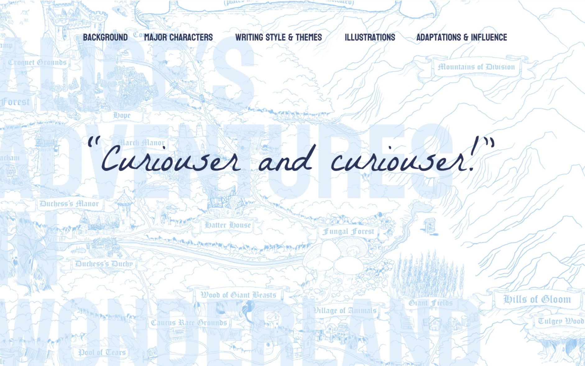

Recipe Page
This is a recipe page I designed for cinnamon rolls.

Microsite (Designer)
This is a microsite about Pomeranians that I designed under the creative direction of Thea Davidson.
Microsite (Creative Director)
This is a microsite about Alice's Adventures in Wonderland that I was the creative director for, and that Josh Elboom designed.